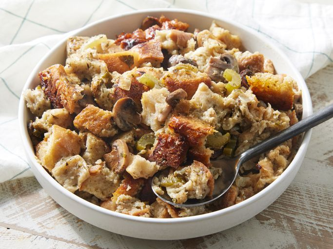

Slow Cooker Stuffing

Description
Slow cooker stuffing is a flavorful, hands-off version of the classic holiday side dish. Made with cubed bread, broth, vegetables, herbs, and seasonings, it cooks low and slow, allowing the flavors to meld while staying moist and tende
Ingredients
- 1 cup butter
- 2 cups chopped onion
- 2 cups chopped celery
- 12 ounces sliced mushrooms
- ¼ cup chopped fresh parsley
- 12 cups dry bread cubes
- 1 ½ teaspoons salt
- 1 ½ teaspoons dried sage
- 1 teaspoon poultry seasoning
- 1 teaspoon dried thyme
- ½ teaspoon dried marjoram
- ½ teaspoon ground black pepper
- 4 ½ cups chicken broth, or as needed
- 2 large eggs, beaten
Steps
- Gather all ingredients.
- Melt butter in a skillet over medium heat. Cook and stir onion, celery, mushroom, and parsley in butter until slightly softened, 5 to 8 minutes.
- Place bread cubes in a very large mixing bowl. Spoon cooked vegetables over bread cubes. Season with salt, sage, poultry seasoning, thyme, marjoram, and pepper.
- Pour in enough broth to moisten, then mix in eggs.
- Transfer mixture to a slow cooker.
- Cover and cook on High for 45 minutes, then reduce heat to Low and cook for 4 to 8 hours.